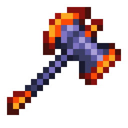

Meteor Hamaxe

Brief
The Meteor Hamaxe is both, a hammer, and an axe.
It's the first Hamaxe you can obtain.
Its best modifier is Legendary.
Crafting
You can make an Meteor Hamaxe using the following:
- Meteorite Bar x20
- Crafting Station: Iron/Lead Anvil
Hamaxes in General
A Hamaxe combines the functions of both, a hammer and an axe.
As a result, it can remove background walls and slope tiles, like a hammer.
Hamaxes also be used as a weapons. However, by the time you obtain a Hamaxe, you'll likely already have a stronger weapon, making this more of a tool instead of a weapon.